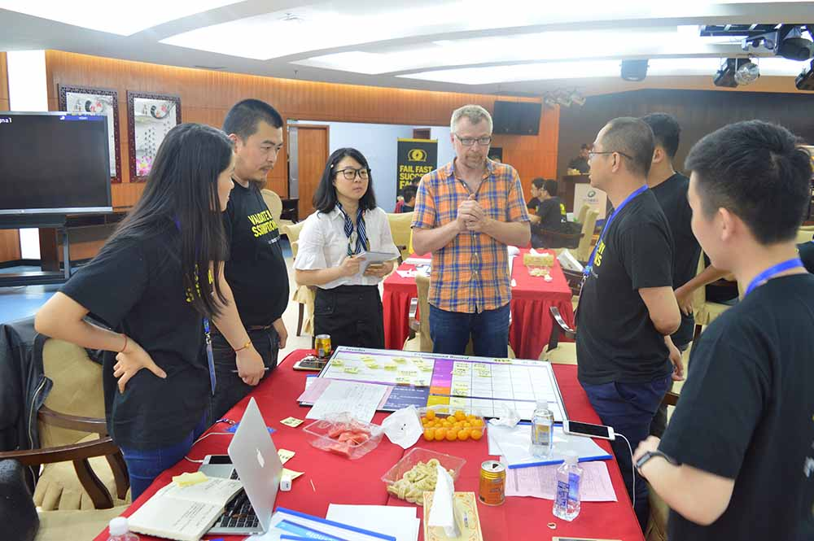
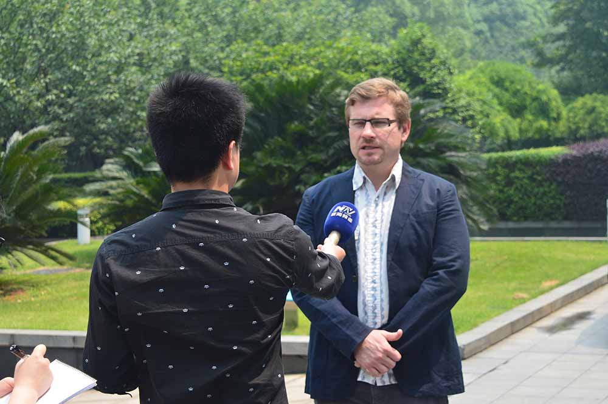
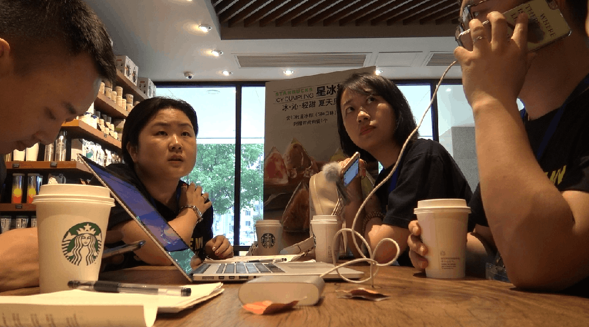
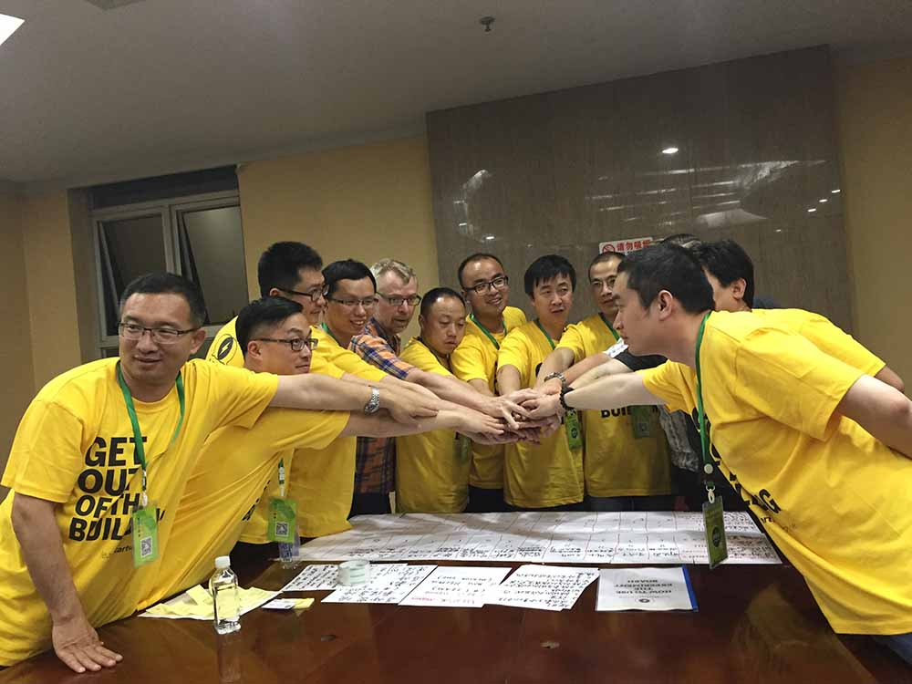
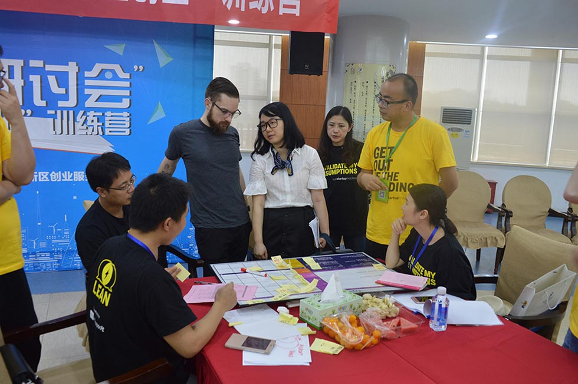

【既然决定出发，便不管风雨兼程】
2016年06月13日
世界很大，我们很小；创业很多，创新很少；产品很多，用户很少；培训很多，实战很少。微软双创潜能激发研讨会，在5月14日开始了实战训练！

每日来一张特雷弗讲师帅照

特雷弗老师带着我们的学员，认真读学员手册

学员认真听取导师们的建议
Lean Startup Machine（精益创业器）公司和Javelin公司的创始人兼CEO 特雷弗·欧文斯讲师声情并茂的用中文告诉学员们：“走出去”。“走出去”意味着接触客户、了解客户。就像特雷弗讲师说的：“每个客户都有一个问题，每个问题都有一个解决方案，但并非每一个解决方案都有一个问题，也不是每一个问题都会对应有一个客户。”这些实战训练是基于在5月13日形成的Idea来做的，每个Idea团队成员针对各自的Idea外出做市场调研。“二进二出”，探讨出Idea的方向，基于这个项目的方向，去做市场调研，调研完之后回到课堂进行调整，再次出发，再去面对客户，再次面对客户的问题。搜集客户最真实的实际行为，而不是做引导性的问题来调研，客户调研不是调研到你想要的答案，你要的答案并不是客户的需求，你最终的产品是要给客户，而不是闭门造车，你觉得用户就该用你的产品或服务。

带着必胜的决心“走出去”

我可以非常负责任的说，这不是硬广，这是一个严肃的调研活动

被调研人非常配合的接收学员们的调研

“赛事管理”团队，去运动场馆采访消费人群

再来一款颜值类型 微软创新中心 全球项目经理 Edsteidl

导师们为团队提供指导
精益创业器对成功者的定义：“推出新产品或服务，证据表明，可行性得到最多客户检验的团队”。“精益创业”的重心是过程而非结果。KISSmetrics的共同创始人、CEO Hiten Shah对精益创业器极为赞赏，说到“精益创业器帮助你学会如何切实停止浪费每个人的时间——不论是客户的时间，你自己的时间，还是整个团队的时间。这将是开创事业的未来”。既然决定出发，便不管风雨兼程。各位客官，且看今日精彩路演！

“学分期教育分期平台”学员们认真研讨的瞬间

学员就项目出现的各种问题征询导师的建议
“扫街”的过程中会有异样的眼光，但我们会排除万难，了解客户
拿个小笔记，记录好客户的每个需求

学员们调研完集聚一起商谈

导师们齐聚一起为我们的Idea拓展思路

特雷弗老师走进团队，聆听创业思路
讲师简介：特雷弗·欧文斯是Lean Startup Machine（精益创业器）公司和Javelin公司的创始人兼CEO，作家。他活跃在多个领域，是白宫创新研究计划的教练，也是普林斯顿大学与哥伦比亚大学的客座演讲嘉宾。欧文斯已帮助成千上万的初创企业创始人和个人在全世界开展新的业务，这些人来自包括谷歌、Salesforce、新闻集团、财捷集团等组织。

更多详情请访问www.msstartup.cn